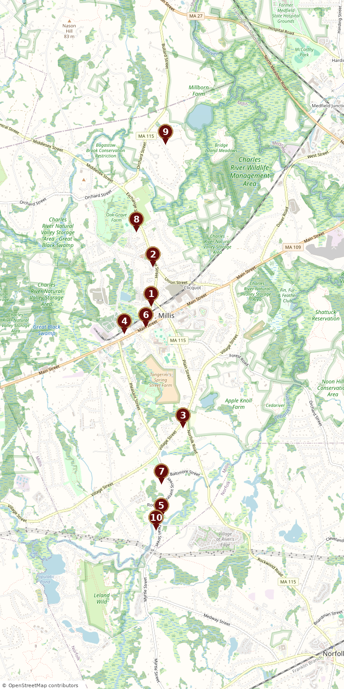

Ten landmarks tracing the story of a New England town - from its colonial meeting houses and the battles of King Philip's War to the mills and railroads that built modern Millis.
Ten historic stops across the town of Millis.

Tap any stop card below to open its article.
Each stop tells a chapter of the Millis story.
The Millis Historic Trail is an Eagle Scout Service Project created by Ben Vaccaro of Troop 15, Boy Scouts of America. The trail connects ten of the most significant historic sites in Millis, Massachusetts, inviting residents and visitors to walk through more than three centuries of local history.
Once part of Dedham and later Medfield, the land that became Millis was settled by pioneers drawn to the fertile banks of the Charles River. Known for generations as East Medway, the community split from West Medway to become the independent town of Millis in 1885, named for railroad man and town founder Lansing Millis.
Each stop on the trail features a QR code linking to its page on this site, so visitors can read the history of a site while standing before it. To learn more about the town's broader history, visit the Town History page.